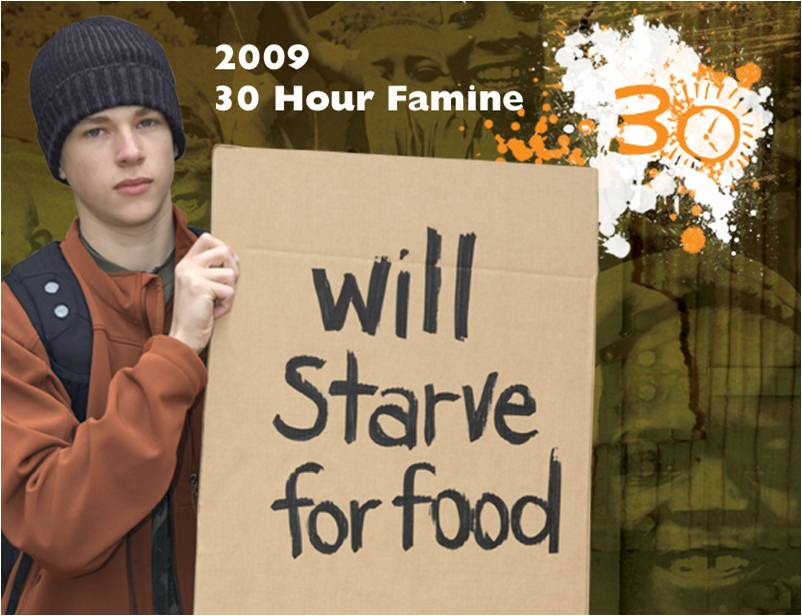

The Ignite Festival is coming up soon! May 2nd we'll be heading to Fort Worth for the 2009 Ignite Confernece featuring Chris Tomlin, The David Crowder*Band, Flyleaf, Sanctus Real and many more! If you want to come just bring 30bucks the day of the show! for more info check out cwfestival.com and click on the 'upcoming events' link.
On May 3d (the day after the Ignite Conference) we'll be going back to Fort Worth, but to the Ronald McDonald House again! This will be our third trip to the RMH and We're getting in down to a science! If you would like to help out just sign up!
I heard really good things about last week and that you all participated well! I hope you guys got alot out of it! If you liked it just let Justin know and we might be able to do stuff like that more often! Thanks to ya'll who helped stuff easter eggs! And a Big Thanks to those who showed up to help hide them on Saturday! I know it meant alot to those kids!
Heres another video
 So this 30 Hour Famine is coming up fast and you guys are already giving us great ideas! There has been talk of sleeping outside in cardboard boxes (I was thinking behind the church by the green truck because its rustikish* back there) so if you have any large (or small) cardboard boxes, or things we can fasion makeshift housing out of go ahead and start bringing it up to the church! If you have any more ideas let me or Justin know, and if you still need more information just click the picture of that sad looking kid on the left.
Be sure to sign up by This Wednesday if you want to participate.
Also, we will be doing "Prayer Stations" this Wednesday. It's going to be a little different than normal youth group. We are going to be walking through the stations of the Cross and doing different little activities and such. It's going to be pretty cool, I wish I could be there :(
anyways thats all for this week, stay tuned for more late breaking news from Pulse Ministries!
* Rustikish is a word I just made up. Rustic + Ish = Rustikish

Hey all,
Theres lots of stuff goin' on in April! Bedford Cleanup Day, Egg Stuffin Day, The Easter Eggstravaganza, Prayer Conferences and much much more!
But first we need to talk about the 30 Hour Famine (April 24 - April 25) You need to sign up by April 5th and bring 10bucks with you on the 24th.
For more information go to http://www.30hourfamine.org/
you can also watch this video of a kid makin a soccerball out of plastic bags.

Hey youth. Its been 2 weeks since the last update (sorry about last week it was a little crazy).
Franci had the baby 2 weeks ago! Her name is Holly Reagan Hardisty and she is adorable! The doctors said that they need to take it easy and just chill for a little while longer before we can all go bombard them with love and attention. I will definatly let you all know when that will be. If you want to see pictures you can check my facebook, or go here for all the pictures: tinyurl.com/hollyhardisty
Thanks to Diane for teaching us about prayer, and the Armor of God on Wednesday, and thanks to all of you who payed attention and were respectful to her... those of you who weren't, I know who you are.
As for site updates... there are none. No new pictures. No new videos. Nothing. Hopefully that will change in the near future.
k, bye.
-Eric
Well, according to my recent little test thing with Wesley singin about his fatness, None of you even check the website.
I think we're just going to stop telling you things so you have to check it. Or at least subscribe to the RSS feed.
But I'm going to post an update regardless.
Wednesday night is Eatin' Night! Come have dinner and help us hand our fliers at the apartments afterwards!
Also, on April 5th we will have an Egg Stuffin' Day from 4pm-6pm! Come help us stuff eggs for the the Easter Eggstraveganza! then come hide them on April 11th at 9am!
Ok, for those of you who read this and check regularly, I thank you very much! You make it worth my time.
-EricHey everybody,
Thanks to everyone who came to the Ronald McDonald House on Sunday! We had a great time and made some really tasty food! For those of you who did not get to go, bee looking on the Calendar for the next time we go. It's a ton of fun!
The only real interesting thing coming up on the Calendar is 'Eatin' Night' on the 11th....
pssst, hey. you, reading the screen. I have a secret! Get a hold of Justin on Wednesday and you may get a chance to win something free out of the Cafe! Just tell him you saw this on the website, and he will ask you a question about the website that only someone who has been to the website would know! I know. Very secret. shhhhhh
Now watch this video!

Time, once again for another update! Yayyyy!
Ok first of all Tonight the church is having a Fat Tuesday Pancake eating party thing at 6pm. Everyone is invited so come on down and bring your appetite!
Second, Tomorrow we will Not be having youth group! Instead we will be across the street at the Ash Wednesday Service. Don't forget!
Lastly, we will be going back to the Ronald McDonald House on March first, Sign up on Wednesday if you would like to go (just ask Justin to get the signup sheet from the gym).
The Most Lastly, Eatin' Night is going to be next Wednesday, and we will eat food. Woo!
Also be praying for Franci because the baby is due on March 19th!
-EricHello all you Pulseities,
As some of you already know, I uploaded pictures from Whirlyball on Sunday and also threw together a quick video shot with Franci's little Flip video camera thing.
Feel free to grab any of those pictures and use 'em on Facebook, or Myspace or whatever else has surfaced within the past twelve hours. All you have to do is right click the picture and click 'open in new window'. If you get confused ask Zach, Because he's already done it. (Thanks again for the props Zach)
Remember to sign up for Ronald McDonald House on March 1st.
Also, Justin said on March 11, the youth will eat... I don't know what that means so you'll have to pay attention on Wednesday.
-Eric
Just uploaded pictures of last weeks game night! Thanks to Elizabeth for taking pictures in my absense! If anybody has pictures from any event that they would like up on the site, just email em to me at eric.huecker@gmail.com
DON'T forget about whirlyball! I saw that alot of you signed up, I'm very excited, so you better show up!
We will be meeting at the church at 5:00 and bring 20 Dollars!
-EricHello Pulse Youths!
This Sunday Sunday SUNDAY! we will be joining Martin Methodists Youth for Whirlyball!
We will be meeting at the church at 5:00 and bring 20 Dollars! Sign up by Tomorrow!!
If you don't know what whirlyball is, go here. --> whirlyball.com
It is fun.
-EricFirst of all Merry Christmas!
Second: I just uploaded pictures from all the Christmas Parties so be sure to check 'em out!
Third: Mark your calendars for January 4th! Not only is Justin preaching that Sunday morning, we will also be visiting the Ronald Mcdonald house in Fort Worth to serve the kids food and hang out with them. This is a great opportunity to use the gifts we've been given, and to help out a bunch of kids who could really use some love.
If you'd like to join us on the fourth let Justin or I know asap.
I just uploaded pictures from the Covanent Players Dinner Theatre, check em out.
Also, those of you who signed up to babysit on Friday for the Staff Party, make sure your show up!
Call Justin if you have any questions.
Whoa. Ok so a couple of updates. See those little button things on top of the post? Those are XML/RSS Feeds! click on the button and import the feed straight into your google homepage or favorite RSS reader. If you don't have any idea what I'm talking about then don't worry about it!
I also edited the pictures page and seperated the pictures into seperate albums, and also uploaded pictures from the decorating party on wednesday.
ALSO! I uploaded a video from one of the service projects today!
Hey Everybody
Ministry Team applications are on the site now, conveniently located in the Forms tab. Note the due date of November 19th. I didn’t include any guidelines with the apps; I’m going to spend some time in prayer,and we’ll talk more when we turn everything in. Hope y’all don’t miss me too much while I’m gone, and have fun filling everything out. I’m looking forward to reading what God has put on each of your hearts! Love you all!
J
(P.S.-be sure to tell Eric thanks for running the site; it makes my head hurt when I try to figure it out…)
Ok everyone! There will be another leaders meeting on the 29th (next wednesday) to plan the 'Senior Winter Trip'. So please bring your parents and we'll have a grand old time!
We just created a new gmail account for prayer requests, praise reports, or anything thats on your mind. its pulseprayers@gmail.com.
if you would like the email to be confidential just write (type) it in there and it will be kept confidential.
Ok, its been a month since the last news update and i appologize, nothing has really happened since then.
But now something has!!
Next Wednesday (10.08.08) Motorist Jones will be in concert in the gym! We haven't had a concert like this in a very long time so we need you guys to get the word out!
Alright! We made it back from the Mystery Trip safe and sound (except for the rental van which now has a small hole in it) and I just posted some pictures! Woo!
Also!
Justin is preaching this Sunday during both services! Be sure to be there at either 8.30 or 11.00 if you want to come!
-Eric
Mystery Trip is coming up fast! There is a parents meeting tonight at 6 for those of you who are going.
the cost is $100.00 (a little more expensive this year due to gas)
Be sure to pick up all the forms tonight!
(the will also be here in the forms page)
Hello! Only one update today, I changed the video page quite a bit. Instead of using Youtube I'm trying this new site called Vimeo. Their videos are much higher quality and they support widescreen (which is what all the videos are) so check it out, lemme know what you think. The problem is, I have to upload all those videos onto this site, but it'll be worth it. I'm still working on it but right now I wanna go to sleep.
Ok, I changed the Calendar page a little bit. We had two different caledndars. One for regular events, and one for special events (trips, fundraisers, ect...) But I decided to have just the special events calendar, since most everybody knows when we meet. It just makes for a better looking, less cluttered page.
Also, I added pictures from Bridgeport Camp on the Pictures page, so be sure to give those a look. (especially the batman broken window).
Just a few quick updates, I added a bunch of pictures in the pictures page so be sure to take a look at those. If you want any of these pictures for your myspace, facebook, or just to have on your computer you can just right click the pictures, select 'open image in new window' and save it from there.
I also added a new video of Doug smashing a computer monitor.
And one more thing that many of you know already! The cafe is restocked with the sugary goodness that you all love so much!
Welcome to the new youth website! I realized that the other one was a waste of space and money, so I condensed it down to this little popup website thing. Everythings still here! Pictures, Videos, Forms, and a new Calendar! There's still work to be done, like getting some background music up and posting current pictures.
Check back often, I'll be updating it alot more than the other website, because I know what I'm doing with this one. It's built from scratch so I can do whatever I want with it! If you have any suggestions or whatever, just email me at eric.huecker@gmail.com.
-Eric